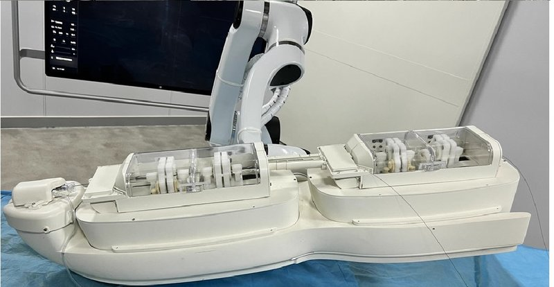

Academic bedside robots · unitedimaging_yao2025
United Imaging
United Imaging vascular interventional robot (VascularPilot3D platform)

1 / 3


- Family
- Academic bedside robots (academic)
- Devices
- guidewire (simulated 0.9 mm radius, 1.55 g/cm3)
- Degrees of freedom
- translation + rotation of the guidewire (Fig. 3 labels); count N.R.
- Push
- Not reported
- Twist
- Not reported
- Tested up to
- Phantom
- Sim-to-real
- Yes — A controller or perception model trained in simulation ran on this robot.
Testing
- Highest level
- Phantom
- What was tested
- Physical robot, Target B of a vascular phantom; 5 trials per RL method, 3 trials per human operator (yao2025_sim2real); autonomous navigation to 5 destinations in a transparent phantom under fluoroscopy, 5 trials each, which the paper calls ex-vivo (song2025_vascularpilot3d Sec. III, Fig. 5)
- Key numbers
- PPO+GAE+DR: 100 % success, 53.0 +/- 5.1 s, error 2.92 +/- 0.41 mm (A) and 2.06 +/- 0.31 mm (B); plain PPO 60 % in 61.0 +/- 4.8 s; SAC 75 % (45.0 s); DDPG 75 % (40.0 s); humans 100 % in 35.0 and 39.0 s (yao2025_sim2real); VascularPilot3D 25 of 25 autonomous navigations, 18.38 % fewer control loops than the human operator, one control step about 2 s (song2025_vascularpilot3d abstract, Sec. III)
Mechanism
- Push (translation)
- N.R. (robot only described as a 'specialized vascular intervention robot provided by United Imaging')
- Twist (rotation)
- N.R.
- Device range
- N.R.
- Target anatomy
- simplified vascular phantom and complex coronary phantom
Sensing and interface
- Force sensing
- N.R.
- Leader and haptics
- N.R.
- Imaging
- United Imaging uAngio 960 fluoroscopy, mean delay 0.2 s from the C-arm to the navigation software; pre-operative CT on uCT 860 (song2025_vascularpilot3d Sec. III)
- Sterility
- N.R.
Size
- Footprint (mm)
- N.R.
- Mass (kg)
- N.R.
Simulation
- Simulation model
- SOFA with BeamAdapter discrete-point guidewire model; anatomy from CT, built with Blender and Onshape; Sim4EndoR platform (yao2025_sim4endor)
- Sim-trained controller
- yes: policy trained only in simulation (PPO with GAE and domain randomisation over friction and tissue elasticity) deployed on this robot with no real-time position feedback; sim 90 % (9/10, Target B) -> robot 100 % (5/5) (yao2025_sim2real, full). yao2025_sim4endor: robot 5/5 and 3/5, open-loop replay (S7b evidence)
- Studies on this robot
- 2025 · Sim2Real Learning With Domain Randomization for Autonomous Guidewire Navigation in Robotic-Assisted Endovascular Procedures — sim PPO 7/10 and 8/10; PPO+DR 8/10 and 9/10; PPO+GAE+DR 9/10 and 9/10 (targets A, B); robot PPO 60% (5 trials); PPO+GAE+DR 100% (5); SAC and DDPG 75% (4); human 100% (3) in 35-39 s
- 2025 · Sim4EndoR: A Reinforcement Learning Centered Simulation Platform for Task Automation of Endovascular Robotics — sim Task A 5/5, Task B 4/5 (DDPG); robot Task A 5/5, Task B 3/5
Versions
- Lineage
- song2025_vascularpilot3d (arXiv 2405.09375 v1 2024-05-15; ICRA 2025): United Imaging's own robot carrying the VascularPilot3D navigation stack ('Our own robot was built', Sec. III, Fig. 5) -> yao2025_sim4endor (ICRA 2025, open-loop replay) -> yao2025_sim2real (T-ASE 2025)
Sources
- VascularPilot3D: Toward a 3D Fully Autonomous Navigation for Endovascular Robotics · 2025 IEEE International Conference on Robotics and Automation (ICRA), 2025 · doi:10.1109/icra55743.2025.11127370 [song2025_vascularpilot3d]
- Sim2Real Learning With Domain Randomization for Autonomous Guidewire Navigation in Robotic-Assisted Endovascular Procedures · IEEE Transactions on Automation Science and Engineering, 2025 · doi:10.1109/tase.2025.3555559 [yao2025_sim2real]
- Sim4EndoR: A Reinforcement Learning Centered Simulation Platform for Task Automation of Endovascular Robotics · 2025 IEEE International Conference on Robotics and Automation (ICRA), 2025 · doi:10.1109/icra55743.2025.11127627 [yao2025_sim4endor]
Notes
- Notes
- United Imaging built the robot itself ('Our own robot was built', song2025_vascularpilot3d Sec. III) and runs its navigation software on ROS on a laptop; no paper describes the drive mechanism. Same white two-cassette bedside unit on an arm as in yao2025_sim2real Fig. 3. Found 2026-11-07 by the user (arXiv 2405.09375), missed by the searches because the title names the navigation system, not the robot.
This record
- Read level
- full — full (song2025_vascularpilot3d; yao2025_sim2real); S7b evidence (sim4endor)
- Picture
- song2025_vascularpilot3d Fig. 5, top panel (arXiv 2405.09375v2, p. 5, native raster 1052 x 1462) ↗ — licence: CC BY 4.0; grade A
- Picture changes
- native extract; cropped to the top panel; nothing erased; none upscaled
- Found by
- academic: Search of academic bedside robots.
- Data
- JSON · YAML:
records/robots/unitedimaging_yao2025.yaml - Correction
- Suggest a correction [repository not created yet]